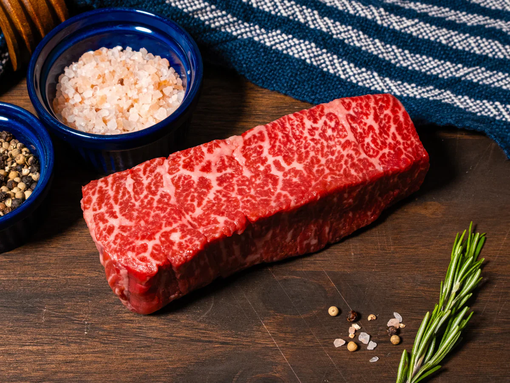

Home
Denver Cut

Description
A description about the Denver Cut.
Ingredients
- Denver Cut
- Salt
- Pepper
- Butter
- Garlic
Steps
- Cover the Denver Cut with salt and pepper on sides.
- Add a bit of butter to a pan on medium heat.
- Once hot, sear each side for five minutes.
- Add butter and garlic on top of last side and cover pan with lid.
- Let rest, then cut into slices.
- Enjoy with a side of mashed potatoes and asparagus.